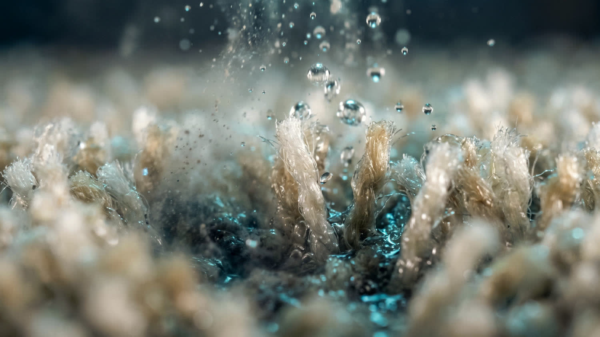

Injection et extraction, en même temps
Une shampouineuse pose le produit et le rincera plus tard. Un injecteur-extracteur injecte et reprend dans le même geste : c’est ce qui le sépare d’une simple shampouineuse.
Accueil La méthode
L’aspirateur prend ce qui est posé. L’injection extraction va chercher ce qui est incrusté, et le remonte au lieu de le noyer. C’est la méthode utilisée en prestation à domicile comme en location de la machine.

Chaque passage est la même séquence. Le visiteur qui loue la machine la reproduit chez lui ; le professionnel l’exécute à domicile.
On dégage, on aspire le sec, on repère les zones marquées.
La solution part sous pression jusqu’au fond de la fibre.
Elle décroche la salissure grasse au lieu de l’étaler.
La turbine reprend l’eau et la saleté dans le même passage.
Peu d’eau reste dans la fibre, donc l’attente est courte.
Le poil se relève, la couleur revient, l’odeur part avec l’eau.
L’aspirateur prend ce qui est posé. L’injection extraction va chercher ce qui est incrusté, et le remonte au lieu de le noyer.
Une shampouineuse pose le produit et le rincera plus tard. Un injecteur-extracteur injecte et reprend dans le même geste : c’est ce qui le sépare d’une simple shampouineuse.
La solution n’est pas posée à la surface : elle est poussée à 1 bar dans la fibre, où l’aspirateur ne va pas chercher.
L’eau sale est reprise dans le même passage. La fibre reste légèrement humide, pas détrempée, et sèche vite.
La méthode est la même, en prestation ou en location.